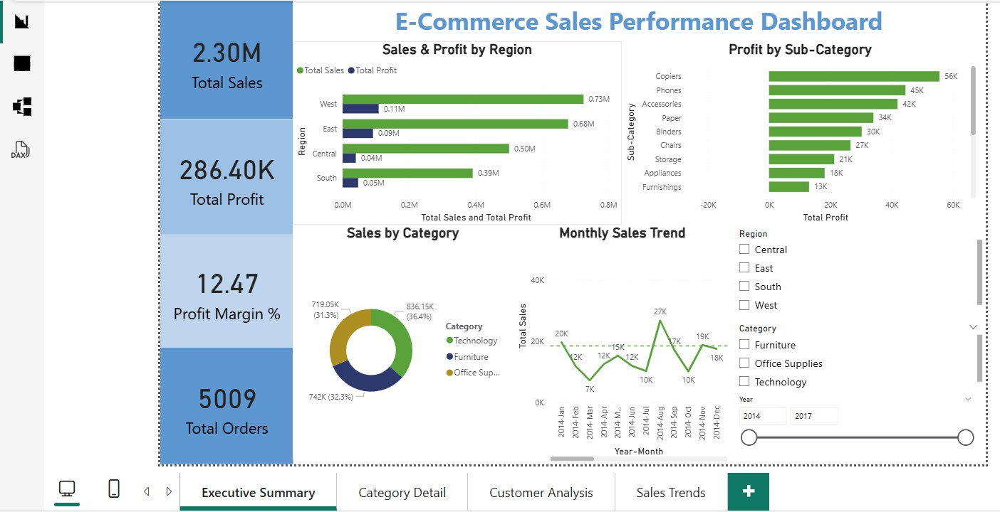
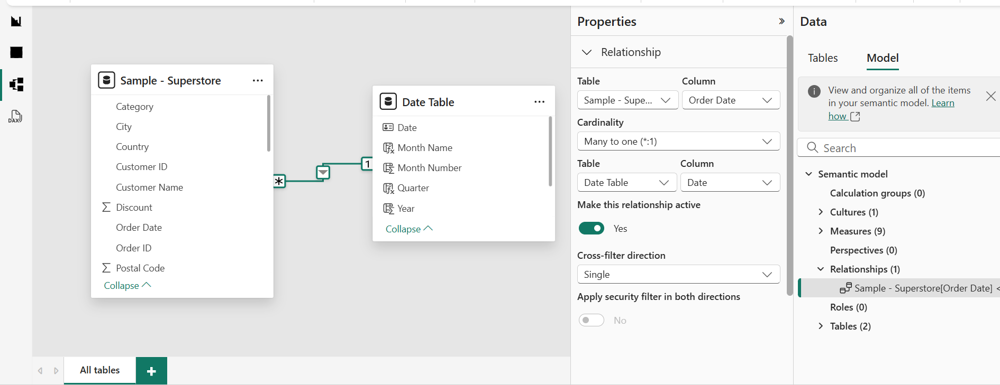
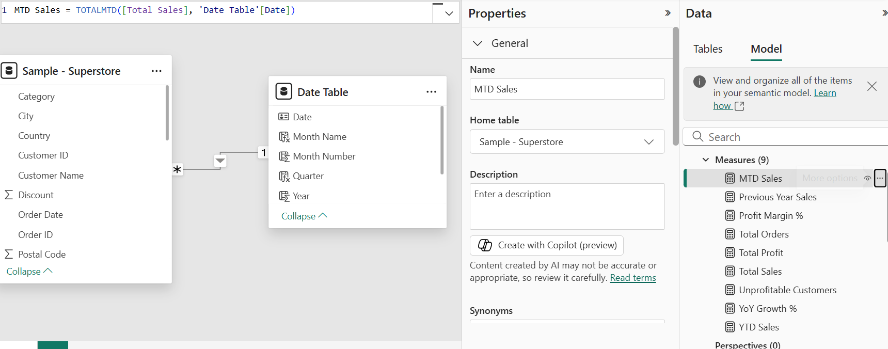
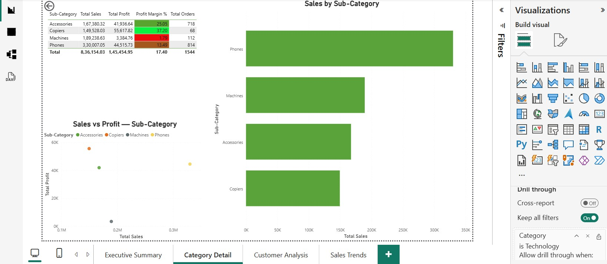
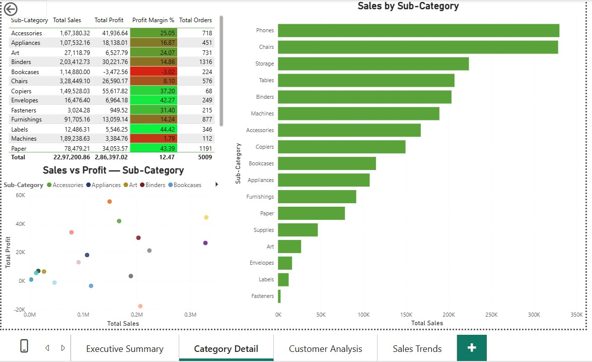
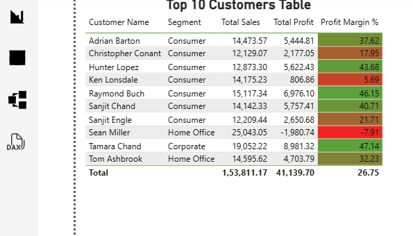
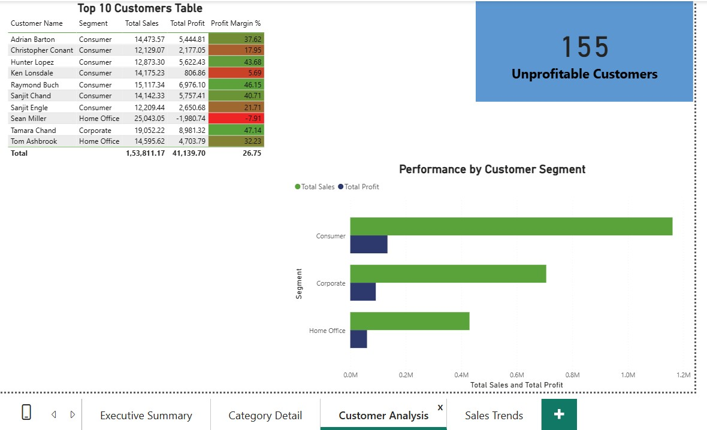
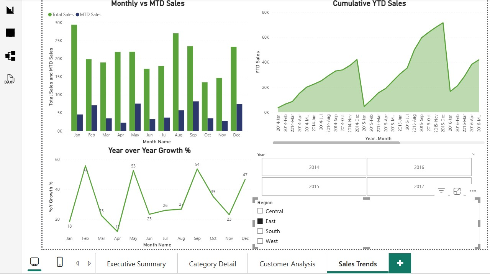

Case Study: E-Commerce Sales Performance Dashboard
1. Project Overview
This project involved building a complete end-to-end business intelligence solution for an e-commerce business using the Superstore dataset. The objective was to move the business from static Excel-based reporting to an interactive, self-service Power BI dashboard that enables leadership and operational teams to monitor performance, investigate anomalies, and make data-driven decisions.
The project covered the full BI development lifecycle — data preparation in MySQL, data modeling in Power BI, DAX measure development, and multi-page dashboard design with drill-through navigation and time intelligence reporting.
2. Dashboard File
📊 View Power BI Dashboard File3. Dataset
The dataset used for this project is the Superstore transactional dataset containing 9,694 records spanning from 2014–2017.
Superstore.csv4. GitHub Repository
View Full Project Repository5. Dashboard Preview

6. Data Model — Star Schema
A star schema was designed with the Superstore transactions table as the central fact table containing measurable business metrics including Sales, Profit, Discount, and Quantity.
A dedicated Date Table was created using the DAX CALENDAR function spanning January 2014 to December 2017 and enriched with Year, Month, Quarter, and Year-Month fields to support time intelligence calculations.

Relationship established between Date Table[Date] and Superstore[Order Date] as a one-to-many relationship enabling accurate time intelligence reporting.
7. DAX Measures & Time Intelligence
Eight DAX measures were developed covering KPIs, profitability calculations, customer analysis, and time intelligence reporting.

- Total Sales
- Total Profit
- Profit Margin %
- Total Orders
- MTD Sales
- YTD Sales
- Previous Year Sales
- YoY Growth %
8. Executive Summary Dashboard
The landing page provides a complete business overview including sales, profit, regional performance, category contribution, sub-category profitability, and monthly sales trends.
- Total Sales: 2.30M
- Total Profit: 286K
- Profit Margin: 12.47%
- Total Orders: 5,009
A critical insight surfaced immediately — Central region generated significantly higher sales than South but lower profit, indicating operational inefficiencies and discount-related margin erosion.
9. Drill-Through Navigation
Drill-through functionality was implemented enabling users to right-click categories and navigate directly into detailed category-level analysis pages.

10. Category Detail Analysis

This page identifies high-sales but low-profit sub-categories using scatter plots, profitability analysis tables, and sales contribution visuals.
Tables generated strong sales volume but negative profitability, revealing aggressive discount-driven losses.
11. Conditional Formatting & Profitability Analysis

Conditional formatting with red-to-green gradients was applied to Profit Margin % columns enabling instant identification of profitable and loss-making sub-categories.
Tables and Bookcases appeared in red with negative margins while Copiers and Phones showed strong profitability.
12. Customer Profitability Analysis

Customer-level analysis revealed that high revenue customers were not always profitable customers.
- 155 customers generated negative margins
- Sean Miller produced negative profitability despite highest revenue
- Tamara Chand showed the highest profitability margin
13. Sales Trends & Time Intelligence

Time intelligence reporting was implemented using MTD, YTD, Previous Year Sales, and YoY Growth measures to identify seasonal trends and yearly growth patterns.
September to November consistently produced peak sales while January showed recurring post-holiday decline patterns.
14. Key Business Insights
- Central region generated higher sales than South but lower profit, indicating operational inefficiencies.
- Furniture category produced weak margins compared to Technology and Office Supplies.
- Tables and Bookcases generated negative profit margins due to aggressive discounting.
- 19.5% of customers generated negative profitability.
- Revenue rankings and profitability rankings diverged significantly at the customer level.
- September to November consistently produced the strongest seasonal sales performance.
15. Techniques Used
- Power Query for data preparation & transformation
- Star Schema Data Modeling
- DAX Measures & Time Intelligence
- Drill-Through Navigation
- Conditional Formatting
- Scatter Plot Profitability Analysis
- Dynamic Filtering & Slicers
- Top N Customer Analysis
16. Final Outcome
The final dashboard enables leadership teams to monitor business performance, identify profitability issues, investigate customer-level margin problems, and analyze seasonal sales trends through a fully interactive self-service reporting solution.